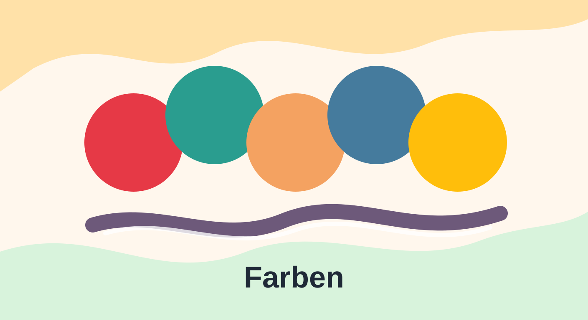
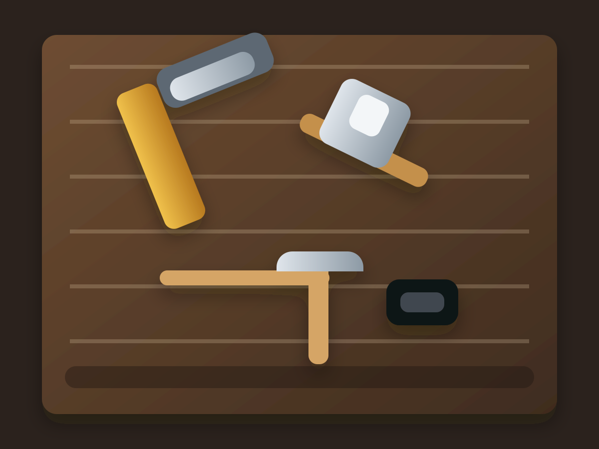
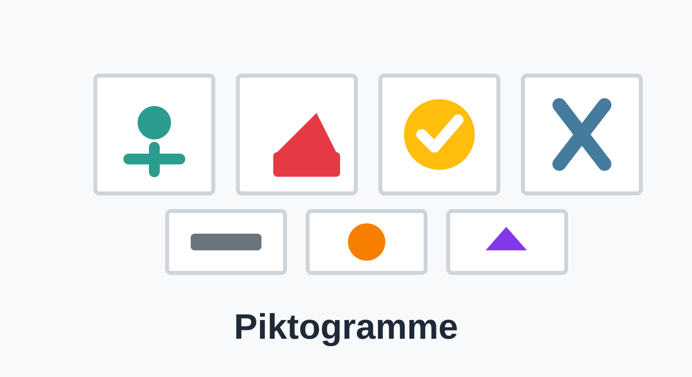

Ballonspiel
Ein ruhiges Spiel zum Reagieren, Zielen und Ausprobieren.

DM
Drogerie-App und zukünftige digitale Inhalte in diesem Bereich.

Farben
Farben erkennen, benennen und spielerisch zuordnen.

Grundwerkzeuge
Werkzeuge, Bilder, Beschreibungen und Orientierungshilfen.
Lernwerkstatt
Kataloge, Übersichten und digitale Inhalte der Lernwerkstatt.

Piktogramme
Sammlung und Übersicht für Piktogramme und Symbole.